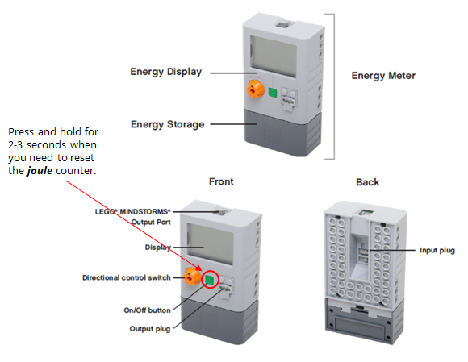

What You Should Know
Renewable Energy
 Renewable energy sources include wind, solar, water, energy from plants (biomass), and human power.
Renewable energy sources include wind, solar, water, energy from plants (biomass), and human power.
- Wind: Wind turbines are turned by the wind. As the turbines turn, they spin a generator. The motion creates energy, which converts into electricity.
- Solar: Sunlight shines on solar panels, which are made to convert light energy into electricity.
- Hydropower (Water): Flowing water turns a wheel to do work or to make electricity.
- Biomass: Energy made from plants.
- Human power: People do the work to create energy.
If you want to learn about wind, solar, and hydropower energy, read: Renewable Energy Information.
Getting to Know the Energy Meter
Look carefully at these diagrams to make sure you recognize all the parts of your energy meter. Download the Getting Started with the Lego Energy Meter guide.
Next, turn it on and look at the display.
Reading an Energy Meter: Joules
A joule (J) is the unit that measures energy. More joules means there is more energy available to do work.
When you use your wind turbine to generate energy, you will see the joules count go up as high as 100 J.